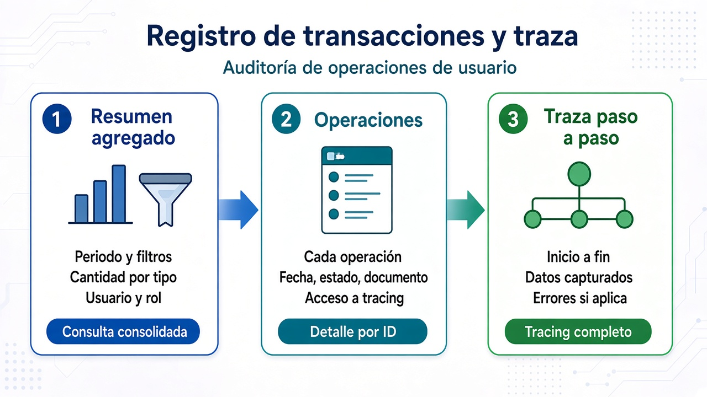
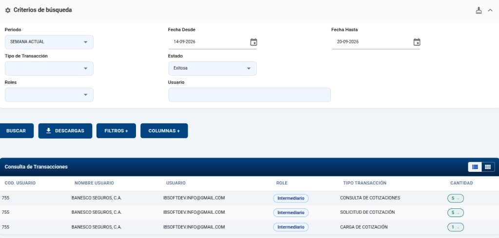
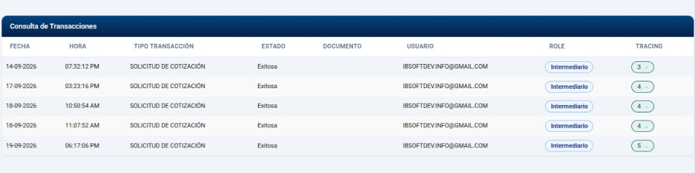
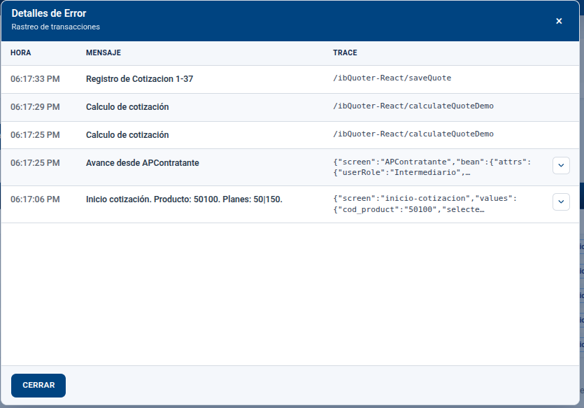
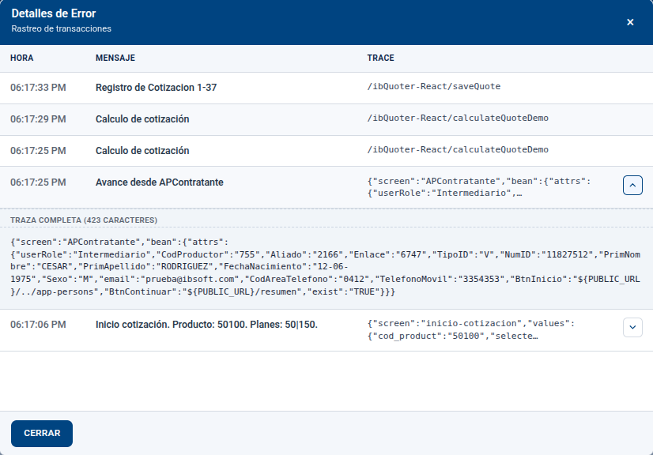
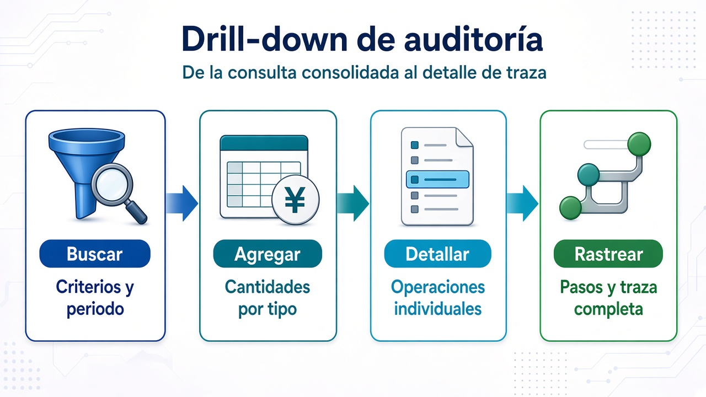
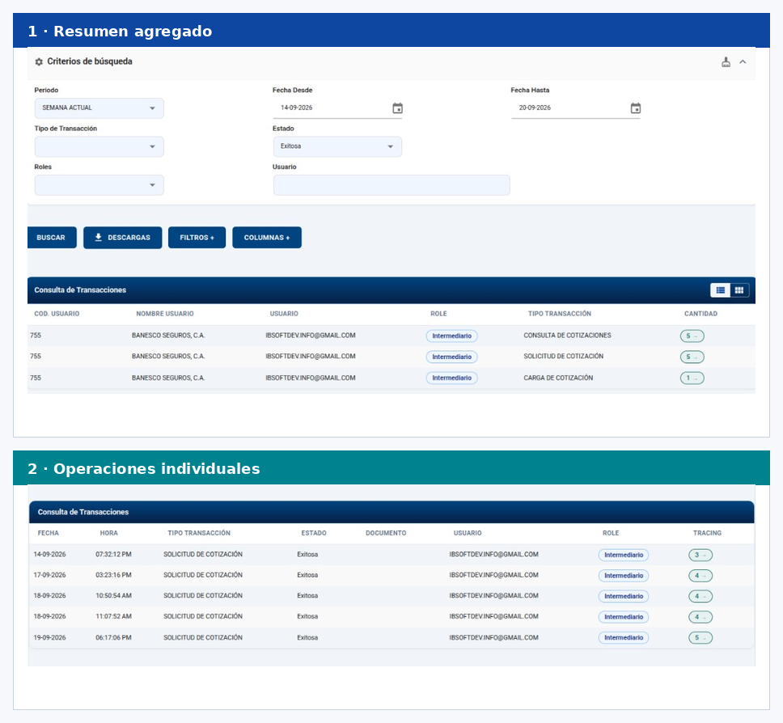
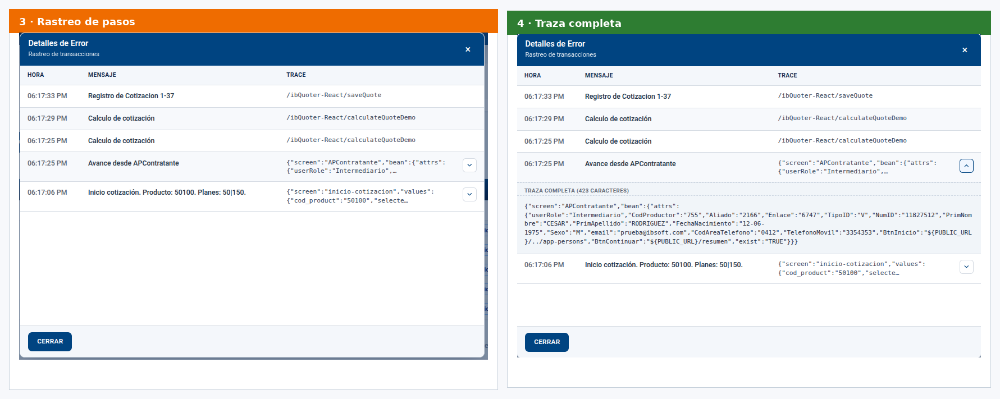

Capacidad disponibleTransacciones y trazaRegistro y auditoría de operaciones de usuario
Disponible
Auditoría operativa de punta a punta
Esta capacidad permite consultar las transacciones registradas
por las aplicaciones del Portal cuando un usuario ejecuta una operación de negocio
(por ejemplo, una solicitud de cotización). Cada transacción puede ampliarse hasta
la traza paso a paso: qué hizo el usuario, qué datos capturó y,
si hubo fallo, el detalle del error.
No es un mockup ni un plan a futuro: es una capacidad operativa de auditoría,
alineada con el modelo de Formas Configurables — el registro y la traza quedan
integrados al motor compartido, listos para sostener el Portal unificado.
Consulta consolidada
Filtros por periodo, tipo, estado, usuario y rol, con cantidades por grupo.
Detalle por operación
Cada transacción individual con fecha, estado, documento y acceso al tracing.
Traza reconstruible
Pasos de inicio a fin, con valores capturados y evidencia de errores si aplica.
Resumen agregado
Cantidades por usuario, rol y tipo de transacción
Operaciones
Listado individual de cada transacción del grupo
Traza
Rastreo de pasos y detalle ampliado de cada invocación

Tres niveles de profundidad: resumen, operaciones y traza
1 Resumen agregado
El administrador define criterios de búsqueda (periodo, tipo de transacción,
estado, rol y usuario) y obtiene un resumen consolidado: cuántas operaciones
de cada tipo registró un usuario bajo un rol. Desde la cantidad se abre el
detalle del grupo seleccionado.
Filtros de negocioPeriodo, fechas, tipo, estado, rol y usuario.
Cantidad clicableEl conteo abre el listado de operaciones del mismo grupo.
Vista exportableAcciones de búsqueda, descarga y ajuste de columnas.
Contexto de sesiónAgrupación por usuario y rol bajo el cual se ejecutó la operación.

Criterios de búsqueda y resumen agregado por tipo de operación
2 Operaciones individuales
A partir del resumen, se listan las transacciones una a una: fecha, hora,
tipo, estado, documento, usuario y rol. Desde cada fila se accede al
tracing — el número de pasos registrados para esa operación.
Una fila por operaciónIdentificación clara de cada transacción del grupo filtrado.
Estado y documentoResultado de la operación y documento asociado, si aplica.
Botón TRACINGMuestra la cantidad de pasos y abre el rastreo detallado.
Continuidad del drill-downDel consolidado al caso concreto sin perder el contexto de filtros.

Operaciones individuales del tipo seleccionado, con acceso a tracing
3 Rastreo de pasos
El diálogo de rastreo reconstruye la ejecución: secuencia de pasos desde el
inicio hasta el fin de la operación. En cada paso se ve la hora, el mensaje
legible y un resumen del detalle técnico (valores de pantalla, rutas invocadas
o registro de error).
Secuencia temporalPasos ordenados para entender el recorrido de la operación.
Mensaje y detalleQué ocurrió en el paso y qué información técnica quedó registrada.
Evidencia de falloSi la invocación falló, el error se refleja en el detalle de traza.
Ampliar TRACECuando el detalle es extenso, se abre la traza completa.

Rastreo de pasos: inicio, avance, cálculo y registro
4 Traza completa ampliada
Cuando el detalle de un paso es largo, la vista ampliada muestra el contenido
completo: valores capturados en pantalla, endpoint invocado o el registro del
error. Es la evidencia fina para soporte, auditoría y diagnóstico.
Detalle íntegroSin truncar el contenido técnico del paso seleccionado.
Datos de capturaValores de pantalla asociados a la invocación, cuando aplica.
DiagnósticoBase para analizar fallos sin reproducir a ciegas la operación.
Cierre del drill-downDe la cantidad agregada hasta el detalle último de la traza.

Traza completa ampliada del paso seleccionado
5 Un patrón de auditoría reutilizable
Buscar, agregar, detallar y rastrear forman un patrón claro de auditoría
operativa. El mismo modelo sostiene las aplicaciones del Portal: cada flujo
de Formas Configurables puede registrar transacciones y traza de forma
homogénea, sin inventar un mecanismo distinto por funcionalidad.

Drill-down de auditoría: de la consulta consolidada a la traza
Buscar: criterios de periodo, tipo, estado, usuario y rol.
Agregar: cantidades consolidadas por grupo de operación.
Detallar: cada transacción individual del grupo.
Rastrear: pasos y traza completa hasta el detalle técnico.

En la práctica: del resumen al detalle sobre pantallas reales

Rastreo y traza completa: evidencia paso a paso
Mensaje clave: el Registro de Transacciones y Traza ya está
disponible como capacidad de auditoría operativa. Integra al nuevo Portal la
visibilidad de quién hizo qué, cuándo y con qué resultado — alineado con
Formas Configurables y con las capacidades de la Fase 1.